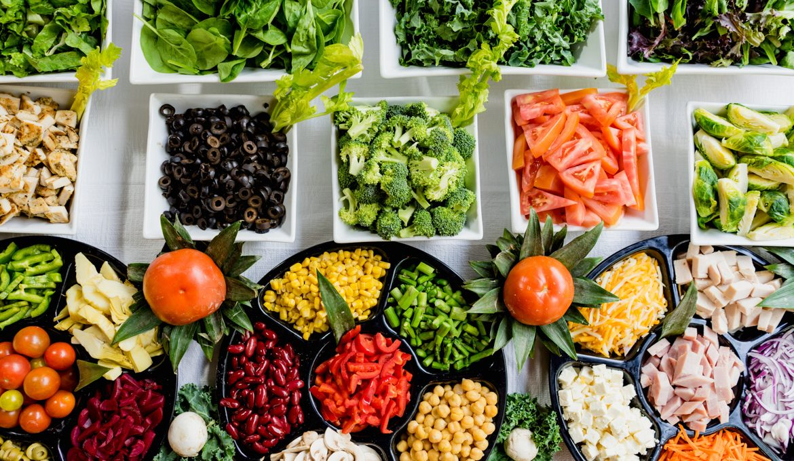
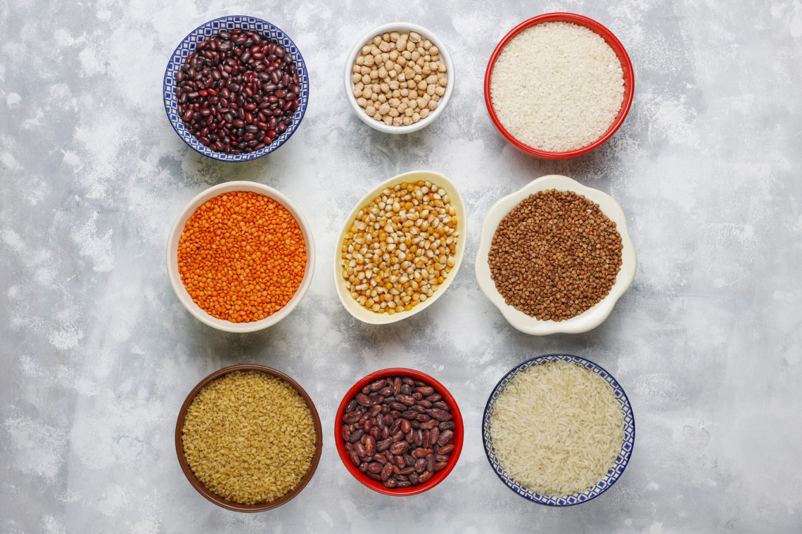

Jak (skutecznie!) zacząć zdrowe odżywianie
To co jemy powinno być przede wszystkim zdrowe czyli
Odżywianie
Prowadzę bloga od ponad 5 lat i często mam wrażenie, że o podstawach zdrowego odżywiania i moich doświadczeniach z tym związanych napisałam już wszystko… A o tym, jak zacząć się zdrowo odżywiać, pisali już wszyscy dookoła (serio, widziałam to na każdym blogu o zdrowym stylu życia i połowie lifestylowych :D). Niemniej wciąż dostaję prywatne wiadomości od Czytelników, którzy nadal nie wiedzą, jak się za to zabrać i mają problem z wdrożeniem zdrowych nawyków żywieniowych. Stwierdziłam, że muszę napisać taki podsumowujący “podstawy” post, aby móc kierować do niego te osoby.
Jak zacząć zdrowe odżywianie?
Zacznę od swojej historii. Moja dieta przez ostatnie lata zmieniła się diametralnie. Za czasów mieszkania z rodzicami opierała się głównie na ziemniakach, mięsie, wędlinach, białym pieczywie, sałatkach z dodatkiem majonezu i serze żółtym. Dziś tych produktów w moim codziennym odżywianiu praktycznie nie ma, a ich miejsce zajęły pełne zboża, kasze, warzywa, owoce, zioła, orzechy i ziarna, napoje roślinne. Zresztą – pisałam niedawno o 15 zdrowych produktach, bez których nie wyobrażam sobie mojej diety. Ja przez te kilka lat dokonałam olbrzymiej zmiany nie tylko w moim jadłospisie ale też w swoim smaku. Wiele produktów zamieniłam na zdrowsze (dla mnie) zamienniki, ale to nie stało się z dnia na dzień. Ba, to wszystko cały czas ewoluuje i nie wiem czy proces ten kiedykolwiek uznam za zakończony. Dlatego uważam, że zmianę nawyków żywieniowych trzeba wprowadzać powoli i stopniowo. Żadne zrywy w stylu “od jutra jem w 100% zdrowo” nie mają sensu. No i najważniejsza w tym wszystkim jest….
Produkty “przejściowe”
Chcąc zamienić niektóre produkty na zdrowsze, warto znaleźć jakiś produkt “przejściowy”, który w tym pomoże. Przykładowo ja chciałam wyeliminować śmietanę, ale nie przepadałam za jogurtem naturalnym, dlatego taka zmiana nie wchodziła w grę. Początkowo zamieniłam więc śmietanę na jogurt grecki, aby potem przestawić się na jeszcze lżejszy jogurt naturalny. Ostatecznie jogurt naturalny zastąpiłam sojowym i to też odbyło się bezboleśnie. Dzięki tym produktom pośrednim nie odczułam drastycznej różnicy w smaku. Podobnie można postąpić z produktami, które można mieszać, np. z mąką. Dziś wiem, że niemal we wszystkim zamiast białej mąki mogę stosować pełnoziarnistą, ale początkowo, kiedy miałam obawy co do takich eksperymentów, mieszałam te dwie mąki pół na pół. Teraz bez obaw stosuję pełnoziarnistą w każdym słodkim cieście, naleśnikach, pizzy itp.
Zamienniki mięsa
Przy ograniczaniu mięsa pomocne są produkty mogące imitować mięsny smak, np. produkty sojowe. Wiem, że soja nie cieszy się dobrą sławą, ale warto nieco zgłębić swoją wiedzę na ten temat i nie powielać mitów. Oczywiście nie można opierać swojej diety wyłącznie na produktach sojowych, ale to samo można powiedzieć o innych grupach produktów spożywczych. Zdrowa dieta, to przede wszystkim dieta urozmaicona! Ale wracając do zamienników mięsa – bardzo pomagają one w przestawieniu się na dietę w większości roślinną, czyli zdrowszą. Jeśli jesteście z Warszawy, wybierzcie się np. do Loving Hut, gdzie menu opiera się w dużej mierze na substytutach mięsa. To Was przekona, że wszystko jest kwestią odpowiednich przypraw :).